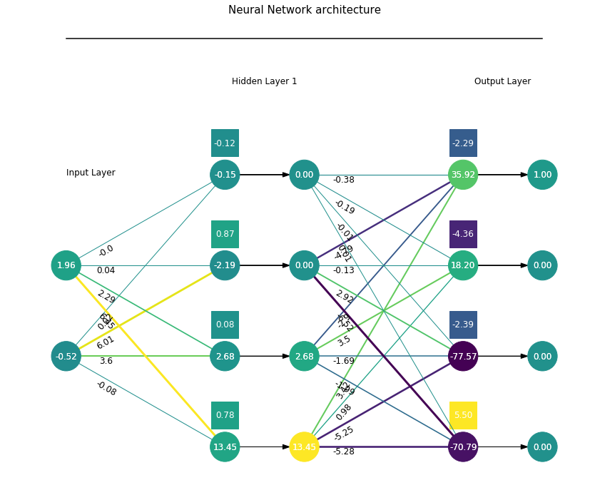

1. Introduction
Welcome back to the FCNN series!
In this new post, we are going to use the Python visualization class, visFCNN(), developed in the two previous posts.
We want to see what happens inside a feed-forward neural network, which has been trained on toy examples with Tensorflow with the previously-developed Python class, trainFCNN(), for a regression problem.
The Python class, visFCNN(), takes as input a dictionary containing all the information required to visualize the network flow, namely the values of the network parameters and main nodes (inputs, linear outputs and activation outputs).
This flow corresponds to a single sample extracted from the dataset.
We are going through the following steps:
- Get some insights into a multi-class classification problem.
- See the impact of the activation function.
- Visualize the space distortion through the two layers of the network.
The source code can be found in my Github repo.
2. Multi-class classification
Let’s explore the network in different scenarios for a multi-class classification problem, quadrants, where we have four classes, one per each quadrant of the Cartesian plane.
import numpy as np
import pandas as pd
%matplotlib inline
import matplotlib.pyplot as plt
from matplotlib import cm
from matplotlib.colors import Normalize as mColNorm
import tensorflow as tf
from keras.utils import np_utils
tnn = trainFCNN(nb_pnt=2500, dataset='quadrants')
tnn.plotPoints(idx=0)

We then use the Tensorflow library to train a fully connected neural network.
We take two different cases to get the insight into the flow wrt the activation function.
We define the network with the dims attribute and the activation function with activation:
activation=relu,dims=[4]: small relu netactivation=sigmoid,dims=[4]: small sigmoid net
The dims=[4] assignment creates a single-hidden-layer network with 4 neurons.
Input and output dimensions are inferred from the dataset itself.
The training will be happening within the train method.
At the end of the training stage, we visualize the loss history to check whether it has reached convergence and the model outcome for the whole domain grid with plotModelEstimate.
3. The small relu network
3.1 Training
We start with a small network, dims=[4], i.e., a single hidden layer with 4 neurons, whose activation function is relu.
We train for 250 epochs.
tnn.train(lib='tf', dims=[4], activation='relu', nb_epochs=250, lr=0.005)
The final model loss is 0.013161101378500462
tnn.train(lib='tf', dims=[4], activation='relu', nb_epochs=250, lr=0.005)
The final model loss is 0.022473108023405075
plt.plot(tnn.lossHistory)
plt.title(tnn.mdlDescription());
tnn.plotModelEstimate(figsize=(16, 9))
3.2 Visualizing the network
Amazing, so far so good!
Now we need to extract the network parameters and the values of each variable and store them in nn_prms and nn_vars, respectively.
We thus define the structure fcnn, a Python dictionary, containing all the information required to visualize the network flow.
We treat the input as the output of a fictitious previous activation layer.
The set of activation layers, $a^{(kk)}$, is retrieved from tnn.nn_vars[1::2], while the set of dense layers, $z^{(kk)}$, is retrieved from tnn.nn_vars[::2].
In a similar fashion, we extract weights and biases from tnn.nn_prms.
fcnn = {'activations': [tnn.XX] + tnn.nn_vars[1::2], 'linNeurons':tnn.nn_vars[::2],
'weights': tnn.nn_prms[::2], 'biases': tnn.nn_prms[1::2],}
We extract the 10-th sample (idx=10).
Here we create an instance of the class and call the visualize method with a tuple of figure size as an attribute.
The input coordinates are (-1.1, -1.51) and the outcome is class 0 (red, bottom-right quadrant).
Let’s have a look at the second top-most neuron of the first dense layer, -8.25.
We get it as:
$$ -1.1\cdot 0.04 + (-1.51)\cdot (6.01) + 0.87 \approx -8.25 $$
Since the activation function is the ReLu function, whatever is negative becomes 0, otherwise does not change at all.
The output layer applies the softmax function to the result of the matrix product between the hidden layer outputs, where none of the four neurons is active, and the second layer’s weights in addition to the biases:
$$ (5.5, -2.39, -4.36, -2.29) $$
to return the final prediction $(1, 0, 0, 0)$.
vnn = visFCNN()
idx = 10
vnn.visualize(fcnn, idx, (15, 12), palette='viridis', colNorm='comp')
4. Softmax function
From this example, it quite clear as the softmax function is just the differentiable version of the max operator.
When the logit of any class is sufficiently high and greater than anything else, the exponential function inside the softmax magnifies it to assign the unit probability to it.
The actual output probability distribution is the one-hot encoding for the class 0.
We round the probabilities to the second decimal digit.
np.round(fcnn['activations'][2][idx,:], 2)
array([1., 0., 0., 0.], dtype=float32)
Recall the softmax definition as:
$$ \sigma(x_k) = \frac{e^{x_k}}{\sum_j e^{x_j}} $$
where $j$ iterates through the $x$ elements.
The code implementation and its application to the output layer logits are shown in the below snippet.
def softmax(arr):
return np.exp(arr)/np.sum(np.exp(arr))
prb = softmax([5.5, -2.39, -4.36, -2.29])
print(np.round(prb, 3))
[0.999 0. 0. 0. ]
A gap of 7 units between the top two logits is going to be spread out to the extreme boundaries of the probability domain.
In fact, this gap is 70% the maximum gap between the four classes (10), but it becomes 100% through the exponent function of softmax.
logits = [-4.36, -2.29, 5.5]
exps = np.exp(logits)
norm = lambda arr: (arr[2]-arr[1])/(arr[2]-arr[0])
print('Normalized gap of the top-two logits before and after softmax: {:.2f}, {:.2f}'.format(norm(logits), norm(exps)))
Normalized gap of the top-two logits before and after softmax: 0.79, 1.00
5. Visualize different samples
Let’s skip to the next sample. We use a simple function to identify the first close-enough sample to the coordinates we are seeking.
def getSample(x0, y0, eps=0.05):
idxs = (np.abs(tnn.XX[:,0]-x0)<eps) & (np.abs(tnn.XX[:,1]-y0)<eps)
return np.where(idxs)[0][0]
We show the network flow for the (1, 1) sample (idx=1700).
idx = getSample(1, 1, eps=0.05) # 1700
vnn.visualize(fcnn, idx, (15, 12), palette='viridis', colNorm='comp')

We show the network flow for the (1, -1) sample (idx=574).
idx = getSample(1, -1, eps=0.075) # 574
vnn.visualize(fcnn, idx, (15, 12), palette='viridis', colNorm='comp')
6. Network properties
6.1 Network parameters
This network shows a really nice property, as we can see from the two weights matrices.
The first and third columns are parallel to the horizontal and vertical vectors $\vec{i}$ and $\vec{j}$ that generate the 2D space, the second column is the $y = x$ line and the last one is off. The matrix representation is here reported, with $a > b > 0$:
$$ \begin{pmatrix}
0 & b & a & 0 \\
a & b & 0 & 0
\end{pmatrix} $$
Moreover, two bias values are there, repeated twice across the four neurons.
$$ (c, 0, c, 0) $$
We show the weights and biases as an image with imshow().
def parameterImshow(prm, layer, textColThreshold, fs=(14, 4)):
plt.figure(figsize=fs)
plt.imshow(prm)
plt.title(layer+'-layer parameters', size = 14)
plt.tight_layout()
width, height = prm.shape
for x in range(width):
for y in range(height):
val = prm[x,y]
txtCol = 'w' if val<textColThreshold else 'k'
plt.annotate('{:.2f}'.format(val), xy=(y, x), ha='center', va='center', color=txtCol, fontsize=14)
plt.axis('off');
W0 = tnn.nn_prms[0]
b0 = tnn.nn_prms[1]
prm0 = np.vstack((W0, b0))
parameterImshow(prm0, 'First', 3)
A nice pattern is also there for the second-layer parameter matrix, which vertically concatenates the 4x4 weights’ matrix and the 1x4 biases’ array.
Considering how the softmax distorts the space, we can understand that we have a dominant element in each row and column. For instance, the dominant element in the first row belongs to the fourth column (class). The fourth row is the silent neuron and the last row is the bias array. This chart can be read as each neuron being mapped to one of the four classes. We will go a bit deeper later with different visualizations.
This gives the double symmetric property to the model, one per axis.
W1 = tnn.nn_prms[2]
b1 = tnn.nn_prms[3]
prm1 = np.vstack((W1, b1))
parameterImshow(prm1, 'Second', 0, fs=(16, 5))
idx = getSample(-.5, 2, eps=0.05) # 1700
vnn.visualize(fcnn, idx, (15, 12), palette='viridis', colNorm='comp')

6.2 Network first-layer space
The first layer draws four lines in the $(x_1, x_2)$ space that we report here for the sake of readability. Lines are ordered and numbered from the bottom up so that line 1 (blue) is the bottom neuron and line 4 (red) is the top one. The rightmost chart is a zoomed view of the $(x_1, x_2)$ space.
The red line is down there, out of the considered domain. Whatever is above is not affected by it, so the fourth neuron is always off.
The first and third neurons instead split the domain into the four areas, while the second neuron (orange) approximately divides the 1 and 3 classes into two regions.
The four classes are numbered from bottom-left quadrant anticlockwise.
x1 = np.linspace(-2, 2, 10).reshape(-1, 1)
b0 = tnn.nn_prms[1]
x2 = - (x1*W0[0:1,:] + b0) / W0[1,:]
plt.figure(figsize=(13, 5))
plt.subplot(121)
plt.plot(x1, x2)
plt.xlim([-3, 3]), plt.ylim([-40, 40])
plt.xlabel('$x_1$'), plt.ylabel('$x_2$'), plt.grid()
plt.subplot(122)
plt.plot(x1, x2)
plt.xlim([-3, 3]), plt.ylim([-3, 3])
plt.xlabel('$x_1$'), plt.ylabel('$x_2$')
plt.grid(), plt.legend([1, 2, 3, 4], loc='right');

6.3 Network second-layer space
We want to see how the second layer is going to play with this new 3D space (the fourth neuron is always silent).
For each neuron, we create a variable, $n_j$, that ranges from 0 (the minimum ReLu output) to 10 (large enough to show the model behaviour) and build a 3D grid that represents any combination of the three neurons.
step = 2
n0s = np.arange(0, 10, step)
n1s = np.arange(0, 10, step)
n2s = np.arange(0, 10, step)
n0mg, n1mg, n2mg = np.meshgrid(n0s, n1s, n2s, indexing='ij')
We apply the second layer linear transformation to the neuron space.
To this end, we pack the grid points into a (5^3, 3) array, nmg, and use the first three rows of the second layer weights’ matrix, W1, to ignore the dead neuron contribution.
nmg = np.vstack((n0mg.flatten(), n1mg.flatten(), n2mg.flatten())).T
b1 = tnn.nn_prms[3]
logits = np.dot(nmg, W1[:-1,:]) + b1
We visualize the output as a 3D scatter plot for each class in a separate chart, where the colour and the size of each dot are proportional to the logit value.
from mpl_toolkits import mplot3d
fig = plt.figure(figsize=(10, 5))
for kk in range(4):
ax = fig.add_subplot(2, 2, kk+1, projection='3d')
logit = logits[:,kk]
logit = (logit - logit.min())/(logit.max()-logit.min())
ax.scatter(n0mg.flatten(), n1mg.flatten(), n2mg.flatten(),
cmap='viridis', c=logit, s=20+20*logit, alpha=0.9)
ax.set_xlabel("$n_0$")
ax.set_ylabel("$n_1$")
ax.set_zlabel("$n_2$")
plt.title(str(kk))
#ax.view_init(10, 60)
plt.tight_layout()
plt.show()
Any point in the 0 class is defined as $(0, 0, 0)$ wrt the three-neurons space, as depicted in the below scheme.
The logits are indeed quite high in that area.
In a similar way, any point in the 2 class needs the neurons to be positive, $(+, +, +)$, and the highest logits are reached in the opposite spot of the grid.
Points that belong to either class 1 or 3 are defined as $(0, _, +)$ or $(+, _, 0)$, respectively, wrt the three-neurons space, where _ means that any output from the second neuron is fine.
That means the highest logit values (yellow and green dots) for class 1 need to be located on the $n_0=0$ plane (deepest-leftmost-vertical side) and on the $n_2=0$ plane (floor).

6.4 Network space transformation
We use the last visualization to map the inputs to the corresponding logits of every class k across the 2D domain.
We create a 2D meshgrid with 0.1 spacing for the two inputs, pack them into the input array xmg and transform it with the network we have built on the fly down below to return the logits.
step = .1
x1s = np.arange(-2, 2, step)
x2s = np.arange(-2, 2, step)
x1mg, x2mg = np.meshgrid(x1s, x2s)
xmg = np.vstack((x1mg.flatten(), x2mg.flatten())).T
a1 = np.maximum(0, np.dot(xmg, W0) + b0)
logits = np.dot(a1, W1) + b1
We visualize each class in a separate subplot, where the colour is related to the logit. The hotter it is, the higher.
def logitContour(logits, colScale):
fig = plt.figure(figsize=(12, 8))
for kk in range(4):
plt.subplot(2, 2, kk+1)
logit = logits[:,kk]
if colScale=='local':
vmin, vmax = logit.min(), logit.max()
else: # global
vmin, vmax = logits.min(), logits.max()
plt.contourf(x1mg, x2mg, logit.reshape(x1mg.shape), 20, vmin=vmin, vmax=vmax)
plt.xlabel("$x_1$"), plt.ylabel("$x_2$")
plt.colorbar()
plt.title(str(kk))
plt.tight_layout()
plt.show()
We report the same figure with two different options:
- The colour scale is relative to the specific chart, so that bright yellow is the highest value of that chart and dark blue is the lowest one.
- The colour scale is fixed for all the four charts so that we can appreciate the different logits’ shades from one chart (class) to the next.
The first figure highlights how the logits are relatively high in the area of the corresponding class.
logitContour(logits, colScale='local')
However, the logits in the 2 class area (top-right) happen to have the same value as other outside points that lie on the $x_2 = -x_1 + c $ line, where $c$ is a constant.
If we have a look at the next chart, with shared colour-scale, we see that those points outside the 2 class area downward have been assigned with higher values from the 1 class and those points entering the 3 class as well.
That explains how the network can successfully classify the whole domain into the correct four classes.
logitContour(logits, colScale='global')
7. The small sigmoid network
7.1 Training the network
We train the small network (one hidden layer with four neurons) with the sigmoid function. As usual, we plot the loss history and the model output space.
tnn.train(lib='tf', dims=[4], activation='sigmoid', nb_epochs=250, lr=0.005)
The final model loss is 0.016496477648615837
plt.plot(tnn.lossHistory)
plt.title(tnn.mdlDescription());
tnn.plotModelEstimate(figsize=(16, 9))
We update the fcnn1 dictionary with the new network parameters and the variables’ values.
fcnn1 = {'activations': [tnn.XX] + tnn.nn_vars[1::2], 'linNeurons': tnn.nn_vars[::2],
'weights': tnn.nn_prms[::2], 'biases': tnn.nn_prms[1::2],}
In general, the network shows higher values of biases and weights to compensate for the sigmoid function nature wrt those of the ReLu function. The former function, indeed, squeezes the input to the $(0, 1)$ range, so the parameters need to scale the output. Also, a neuron dies when its input is very negative.
We can again appreciate the symmetrical structure of the two layers’ matrices of parameters, especially for the first layer.
W0 = tnn.nn_prms[0]
b0 = tnn.nn_prms[1]
prm0 = np.vstack((W0, b0))
parameterImshow(prm0, 'First', 1)
The second matrix can be simplified with the following representation, with $a < 0 $ and $ b > 0$:
$$ \begin{pmatrix}
a & b & b & a \\
a & a & b & b \\
b & b & a & a \\
a & b & b & a \\
b & a & a & b
\end{pmatrix} $$
W1 = tnn.nn_prms[2]
b1 = tnn.nn_prms[3]
prm1 = np.vstack((W1, b1))
parameterImshow(prm1, 'Second', 3, fs=(12,5))
We extract two different samples, with the same code snippet used at the end of the previous section:
- sample
366for $(x_1, x_2) = (1, 1)$, north-east - sample
673for $(x_1, x_2) = (-1, -1)$, south-west
We change palette to winter for better readability.
idx = getSample(1, 1, eps=0.05) # 1700
vnn.visualize(fcnn1, idx, (15, 12), palette='winter', colNorm='comp')
idx = getSample(-1, -1, eps=0.05) # 1700
vnn.visualize(fcnn1, idx, (15, 12), palette='winter', colNorm='comp')